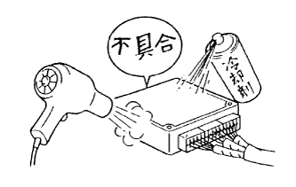
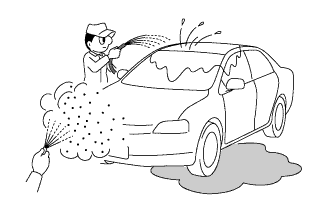

How to troubleshoot ECU control systems Simulation method of malfunctional phenomenon |
Parts and sensors
Give vibrations such as lightly tapping by hand on the estimated causal components, and check for problems.
connector
Shake the connector lightly up and down and left and right.
Wire harness
Lightly shake the wire harness up and down, left and right, and check for problems.
Antenna cable
Lightly shake the antenna cable up and down and left and right to check for problems.
|  |
Use a hairdryer or a coolant to heat or cool the estimated defective parts to check if there is a problem.
|  |
Put water on the vehicle to check if there is any problem.
The electrical components such as Hita Blow, headlamps, and rear defoga are activated to increase electricity loads, and check for problems.